If you want to see which parts of your source code are covered by E2E tests, you can use code coverage. The problem is often instrumenting the code. Sometimes you don't have the control over the source code to insert the babel-plugin-istanbul. Sometimes you can only test the deployed uninstrumented application.
I have used a code coverage proxy before. It sits between the application and the E2E tests and instruments the returned application scripts on the fly. In this blog post, I will show how you can use the cy.intercept command to instrument JavaScript bundles on the fly. You can produce useful code coverage reports for any web application!
🎓 The example application for this blog post is in the repo bahmutov/tdd-calc. It is a demo app used in my TDD Calculator Cypress online course.
The example application is a standalone HTML page that downloads 2 scripts
1 | <script type="module" src="./app.js"></script> |
1 | // calculator logic |
1 | // pure functions used during computation |
Here is the spec that simply loads the app
1 | import { CalculatorPage } from './calculator-po' |
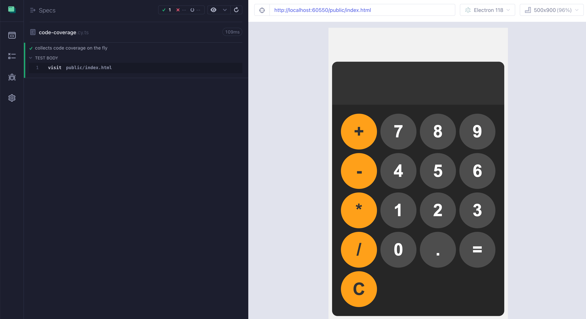
We can see both scripts loaded
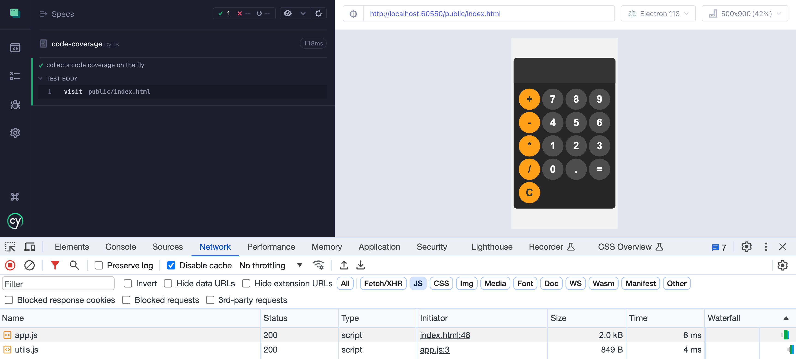
Let's instrument those scripts
Custom intercept
Let's spy on the scripts loaded by the application. We can modify the outgoing browser request and the incoming response. I will remove the caching headers to always receive the script source.
1 | it('collects code coverage on the fly', () => { |
Great, we just modified each source file by inserting the script URL comment.
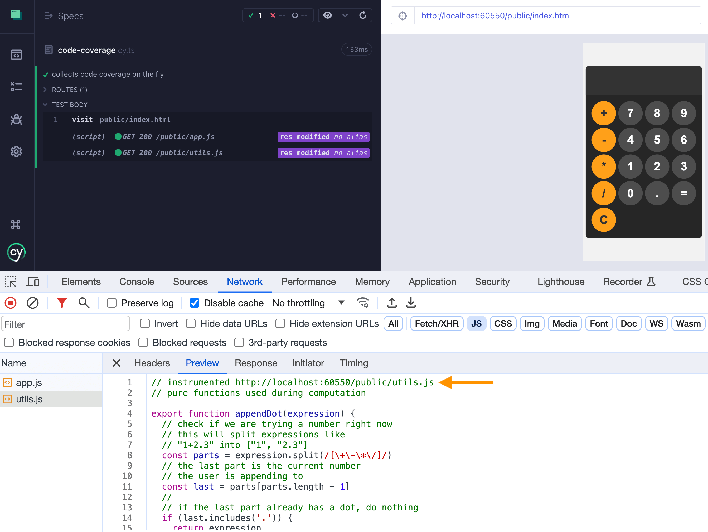
The URL looks random since Cypress serves a static file using a random local port. Let's remove the random part, we are only interested in the public/... filename.
1 | const baseUrl = Cypress.config('baseUrl') |
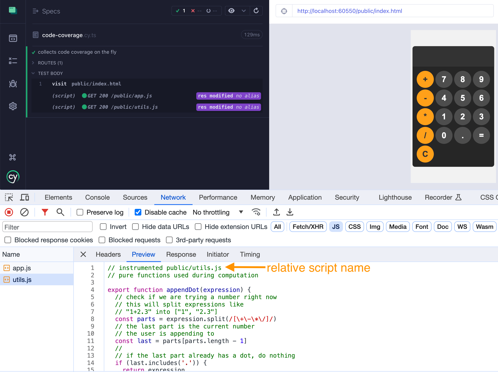
Sometimes the page loads its own scripts that we want instrumented plus 3rd-party scripts we want to skip. Let's use a wildcard pattern or a regular expression to pick the scripts to instrument.
1 | cy.intercept( |
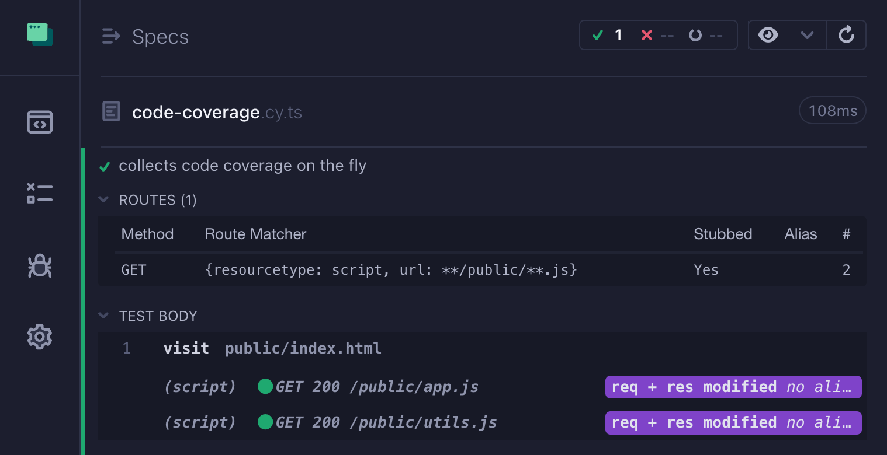
Great.
Instrument the response
Now that we have the application's source code, let's instrument it. I will install the nyc module that includes the babel-plugin-istanbul dependency.
1 | import { CalculatorPage } from './calculator-po' |
Hmm, is it working? Let's look at the scripts as received by the browser.
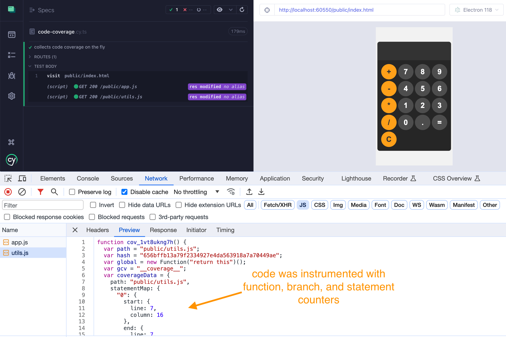
We can also check if the instrumentation succeeded by looking at the global window.__coverage__ object that keeps all the collected information.
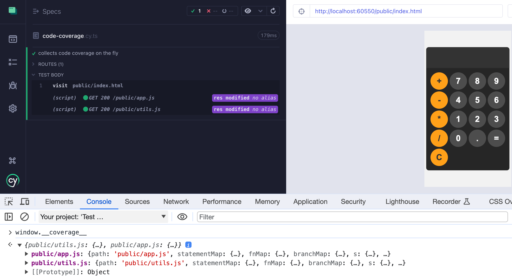
We can even confirm the code coverage is being collected from the test itself
1 | cy.visit('public/index.html') |
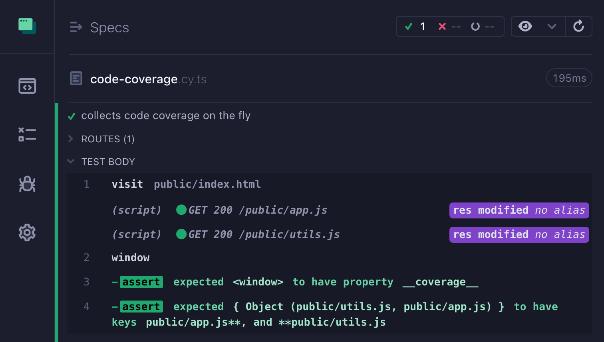
Coverage report
The global window.__coverage__ object has all the function, branch, and statement counters. If we interact with our application, those counters get incremented. Let's produce the report after the tests are finished. I will install my @bahmutov/cypress-code-coverage plugin.
1 | // in the E2E config |
1 | // https://github.com/bahmutov/cypress-code-coverage |
Finally, let's produce HTML and text summary report when the tests finish.
1 | { |
When we run the test now, we can see the plugin logging its steps. Everything seems to be working.
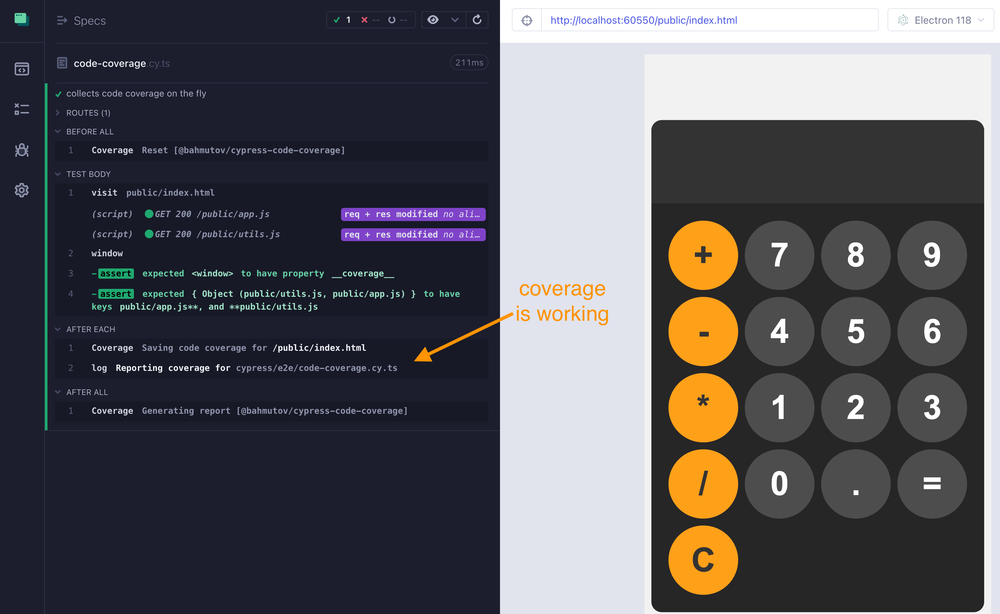
Hmm, the coverage is pretty low: 15% of statements
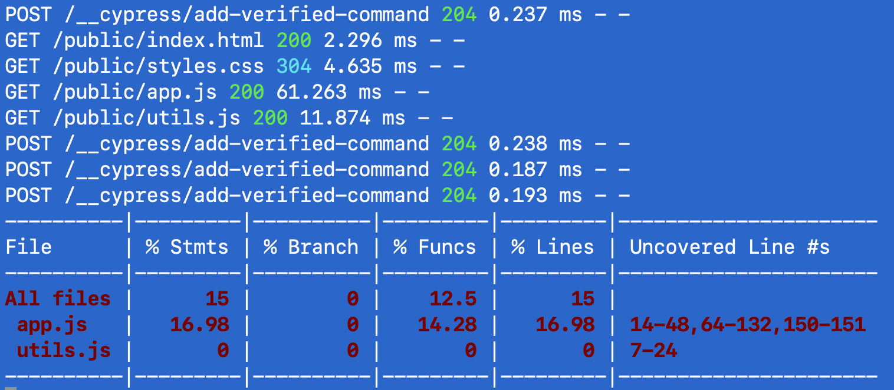
The coverage report
Open the HTML report located in the coverage folder
1 | $ open coverage/index.html |
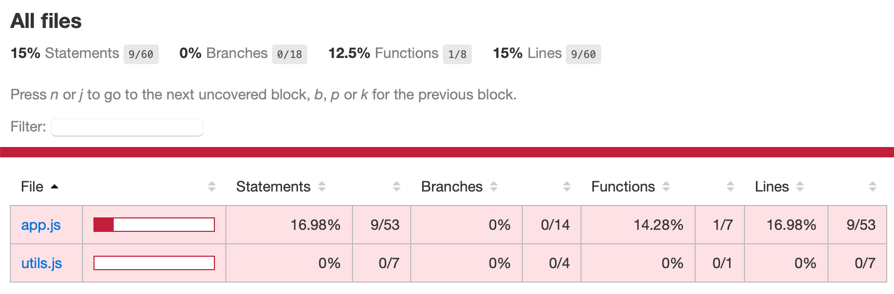
We have some coverage for the public/app.js source script, but nothing for the public/utils.js script. Let's open the app.js report. It shows line by line coverage.
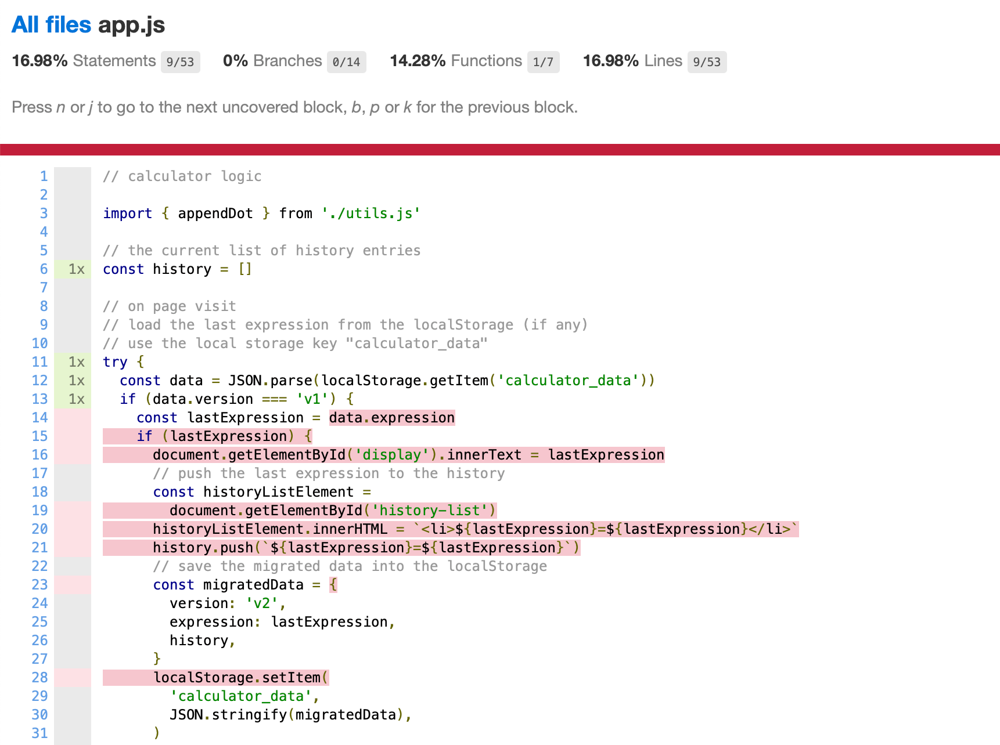
Of course: we simply visited the page, we never interacted with our calculator. Let's increase the code coverage by computing an expression.
1 | // intercept code |
The code coverage jumps to 45%
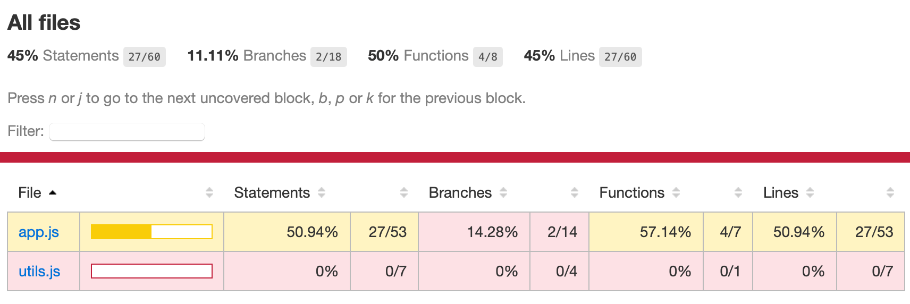
Tip: if you use bundle splitting, the page might load only some scripts! The code coverage report shows the results for the loaded scripts, thus you might miss the source files that were never loaded.
Hmm, our utils.js bundle is still at zero. It has a single appendDot function
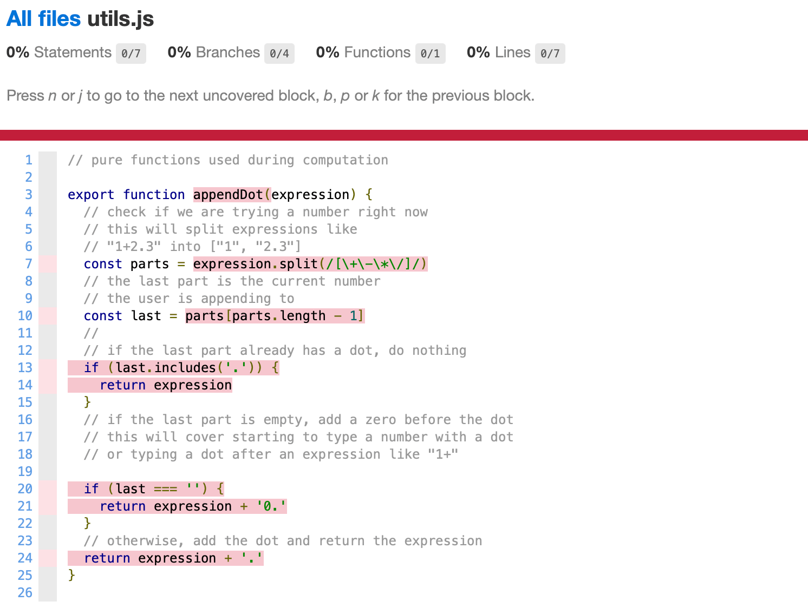
Our expression only has whole numbers, so the appendDot was never called! Let's update our test to "hit" the appendDot code
1 | // compute an expression and see the increased code coverage |
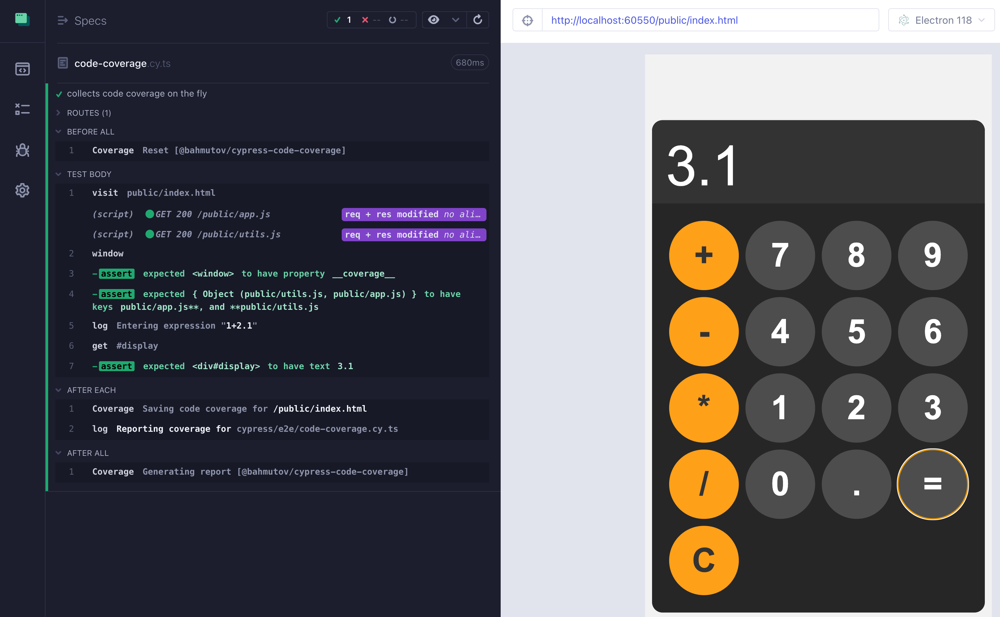
Nice, the coverage shot up!
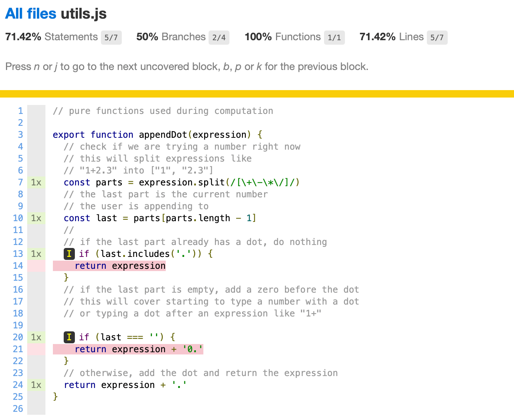
We can look at the code coverage report as a treasure hunt map and keep adding tests until we go through all implemented code features.
The code coverage plugin
Finally, instead of implementing the instrumentation ourselves, we can use the @bahmutov/cypress-code-coverage plugin to instrument and report. Simply tell the plugin the wildcard pattern / regular expression to instrument.
1 | const { defineConfig } = require('cypress') |
1 | import { CalculatorPage } from './calculator-po' |
The test produces the same report. Let's now run all tests using npx cypress run and see what the full coverage shows
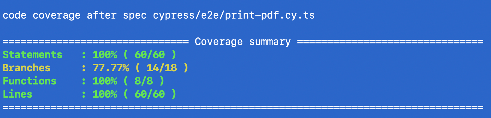
Beautiful, we got all 100% statements covered and just a few "ELSE" branches were not tested (edge cases).
Note: the plugin does not use source map transformations to map the intercepted JS bundle back to individual files.